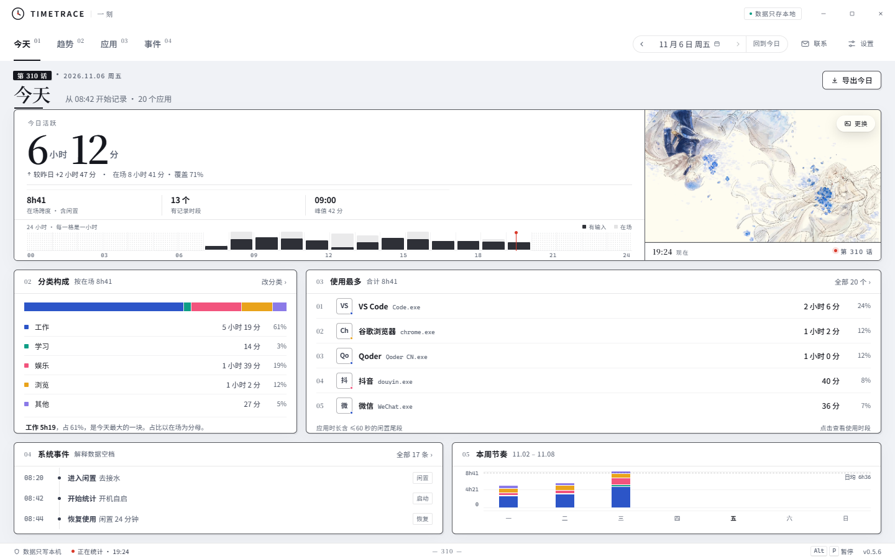

把电脑时间，记清楚。
TimeTrace 只做一件事：把你在各个应用上花的时间记清楚，并如实展示。它不评判效率，也不上传任何东西——所有记录都躺在你自己磁盘上的一个 SQLite 文件里，你随时可以打开、导出、搬走。

少了这些，才敢叫本地工具。
市面上的计时工具大多要账号、要同步、要告诉你该怎么做。TimeTrace 把这些都拿掉了。
不上传
记录只写本机 SQLite，无账号、无遥测，默认不联网。唯一可能的出站请求是读取一次公开的更新清单，而且默认不开自动检查——设置里还能切成「完全离线模式」。
标题栏会直接标出当前状态：「数据只存本地」「仅检查更新」或「完全离线」。
不评判
不打分效率、不设目标、不推送提醒。「在场」是前台待了多久，「活跃」是其中有键鼠输入或系统在放声音的那部分——两者分开记，闲置时间照记，数字该怎么来就怎么来。
窗口标题默认不记录；只有你在设置里显式打开才记。
不收费
完全免费：无付费墙、无订阅、无广告、无功能阉割、无账号体系。源码以木兰宽松许可证第 2 版开放，想看它怎么统计的，可以自己读、自己编译。
从「今天」到「事件」，逐层看下去。
顶部章节导航直接切换，也可以用 #today #trend #apps #events 直达。历史回看支持最近 90 天。
今天：总时长、分类构成、使用最多的应用、系统事件与本周节奏，一屏看完。
以上界面截图由 TimeTrace v0.5.6 当前源码构建后实际运行截取；画面中的数据为内置演示快照，不是任何真实用户的记录。
能打开，能导出，能搬走，也能彻底删掉。
数据目录默认在本机用户目录，路径可以自己改。下面这些操作全在本地完成，不经过任何服务器。
导出 CSV / JSON
把记录导成通用格式，想用 Excel、Python 或别的东西分析都行。导出内容默认不含窗口标题。
立即备份与恢复
一键备份当前数据库，也能从备份文件恢复。备份留在你自己指定的目录里。
整库迁移
换数据目录时按「复制 → 校验 → 写设置 → 切换连接 → 删旧库」的顺序执行，先确认新库完整才动旧的。
清除全部数据
先列出将被删除的条数，再要求手动输入「清除」才可执行；底层用安全擦除、VACUUM 与 WAL 截断处理残留。
记什么、不记什么，写清楚。
不用猜，也不用读隐私政策里那段绕来绕去的话。
只记时间，不记内容
- 前台应用时长：每秒采样一次，连续使用合并成一段
- 在场 / 活跃：两个口径分开统计
- 系统事件：开机、闲置、休眠唤醒、锁屏解锁、暂停继续
- 应用分类：工作 / 学习 / 娱乐 / 浏览 / 其他，可自行改
- 窗口标题：默认关闭，需显式打开
这些内容一律不碰
- 键盘输入内容
- 截图
- 剪贴板
- 浏览记录
- 任何设备标识
一个小到不需要管理的程序。
- 当前版本
- 0.5.62026-11-04 发布
- 体积
- 约 6 MB免安装单文件，双击即用
- 技术栈
- Tauri 2 · Rust · React 19TypeScript · SQLite（rusqlite bundled）
- 运行平台
- Windows 10 / 11（x64）需要 Microsoft Edge WebView2 运行时
- 许可
- 木兰宽松许可证 v2源码开放，可自行编译
- 更新方式
- 应用内原地覆盖设置、记录、快捷方式都不动；自动检查默认关闭
把时间留在自己手里。
一个安装包，点击即下载。完全免费，不需要注册，也不会问你要邮箱。
点击即开始下载 v0.5.6 安装包。项目没有代码签名证书，Windows SmartScreen 可能提示「未知发布者」；安装前请先从托盘右键退出正在运行的 TimeTrace。需要免安装单文件或 MSI，请到发布仓的 v0.5.6 目录；历史版本与更新清单也在同一个仓库。
还有几个可能被问到的。
需要联网吗？
不需要。统计、存储、展示全在本机完成，默认不联网。只有主动点「检查更新」时才会读一次公开清单，且自动检查默认关闭；设置里可以开启「完全离线模式」，彻底关掉这条出站请求。
我的数据会被上传吗？
不会。没有账号体系，没有遥测，没有云端同步。记录只写本机 SQLite 文件，文件路径可以自己改，也可以随时导出、备份或清除。
换电脑或重装怎么办？
把数据目录整个复制走即可；设置里也提供导出、备份恢复与整库迁移。应用内更新采用原地覆盖，不会动到设置、记录和快捷方式。
支持 macOS 或 Linux 吗？
目前只支持 Windows 10 / 11（x64），依赖 WebView2 运行时与 Windows 前台窗口接口。界面本身是 Web 技术，但采集层是 Win32 实现，暂未移植到其他平台。
在哪里看源码和更新日志？
源码在 GitCode 仓库，安装包、历史版本与更新清单在 Gitee 发布仓。许可为木兰宽松许可证第 2 版。